แก้จากเวอร์ชันก่อน: ไม่ตอบรวมเป็นก้อนเดียวแล้ว — ทุกข้อย่อยถูกแยกให้ดูทีละข้อ เช่น
a), b), c-i), c-ii), d) และมีสูตรกับวิธีคิดครบในแต่ละข้ออัปเดตเพิ่ม: ขยายรูปสไลด์ให้ใหญ่ขึ้น,
กดที่รูปเพื่อซูมดูได้ และเอาแถบหัวบนแบบติดตามหน้าจอออกแล้ว
สารบัญ / Checklist
Lecture
หัวข้อที่หาเจอ
สถานะ
L09
Exercise 1 Disk capacity
3 subquestions answered
L09
Exercise 2 Capacity & access time
a–g answered
L09
Exercise 3 Blocks needed
a–c answered
L09
Exercise 4 Search time
a–d answered
L11
Hash exercise
bucket load + average accesses
L11
Types of index
rules answered
L11
Examples 1–3
all calculations answered
L12
Examples 3–4
multilevel index answered
L12
Search tree/B-tree
checking rules
L12
Examples 6–7
B+ tree order + capacity
L13
SQL ↔ RA
equivalent questions answered
L13
Query tree exercise
A/B/C answered
L13
Optimization cost
Strategies I–III answered
L13
Selection/join/projection/set cost
examples answered
L14
Tuning
decision rules + SQL syntax
L15
Transaction management
problems/schedules/serializability answered
L09
Exercise 1: Disk Capacity
↑
โจทย์ย่อ: 8 platters = 16 surfaces, 2^14 tracks/surface, 2^7 sectors/track, 2^12
bytes/sector. ถาม disk capacity, block size ถ้า 1 block = 4 sectors, และ blocks/track.
a) Disk capacity
สูตร: capacity = surfaces × tracks/surface × sectors/track ×
bytes/sector
= 16 × 16,384 × 128 × 4,096
= 2^4 × 2^14 × 2^7 × 2^12 = 2^37 bytes
2^37 bytes = 128 GiB
คำตอบ: 128 GiB หรือ 137,438,953,472 bytes
b) Block size
สูตร: block size = sectors/block × bytes/sector
= 4 × 4,096
= 16,384 bytes
คำตอบ: 16,384 bytes = 16 KiB
c) Blocks per track
สูตร: blocks/track = sectors/track ÷ sectors/block
= 128 ÷ 4
= 32
คำตอบ: 32 blocks/track
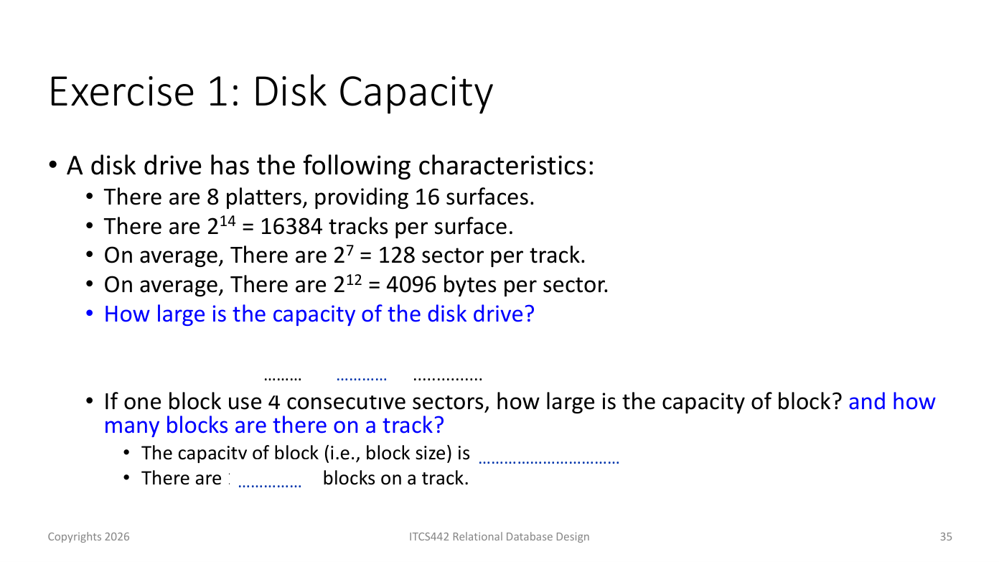
L09 slide p.31
L09
Exercise 2: Capacity & Data Access Time
↑
โจทย์ย่อ: B=512 bytes, G=128 bytes, 20 blocks/track, 400 tracks/surface, 15
double-sided disks = 30 surfaces, 2400 rpm, average seek=30 ms.
a) Track capacity
สูตร: track total = blocks/track × (B+G), useful = blocks/track × B
total = 20 × (512+128) = 12,800 bytes
useful = 20 × 512 = 10,240 bytes
คำตอบ: Track total = 12,800 bytes, useful = 10,240 bytes
b) Number of cylinders
สูตร: cylinders = tracks per surface
There are 400 tracks per surface
Tracks with same radius across surfaces form cylinders
คำตอบ: 400 cylinders
c) Cylinder capacity
สูตร: cylinder = track capacity × number of surfaces
surfaces = 15 × 2 = 30
total = 12,800 × 30 = 384,000 bytes
useful = 10,240 × 30 = 307,200 bytes
คำตอบ: Cylinder total = 384,000 bytes, useful = 307,200 bytes
d) Disk pack capacity
สูตร: disk pack = cylinder capacity × cylinders
total = 384,000 × 400 = 153,600,000 bytes
useful = 307,200 × 400 = 122,880,000 bytes
คำตอบ: Total = 153.6 MB, useful = 122.88 MB
e-i) Transfer rate and block transfer time
สูตร: rotation time = 60,000/rpm; tr = track bytes/rotation time;
btt = (B+G)/tr_total = B/tr_useful
rotation time = 60,000/2400 = 25 ms
total transfer rate = 12,800/25 = 512 bytes/ms
useful transfer rate / bulk transfer rate = 10,240/25 = 409.6 bytes/ms
btt = 640/512 = 1.25 ms
คำตอบ: tr(total)=512 B/ms, btr(useful)=409.6 B/ms, btt=1.25 ms
e-ii) Average rotational delay
สูตร: rd = one rotation time ÷ 2
rd = 25/2
คำตอบ: 12.5 ms
e-iii) Bulk transfer rate
สูตร: bulk transfer rate = useful bytes per track ÷ rotation time
= 10,240 ÷ 25
คำตอบ: 409.6 bytes/ms
f) Locate and transfer single block
สูตร: time = seek + rotational delay + block transfer time
= 30 + 12.5 + 1.25
คำตอบ: 43.75 ms
g) 20 random vs 20 consecutive blocks
สูตร: random = 20×single block; consecutive double buffering =
seek+rd+20×btt
random = 20 × 43.75 = 875 ms
consecutive = 30 + 12.5 + 20×1.25 = 67.5 ms
Consecutive is much faster because seek and rotational delay happen only once
คำตอบ: Random ≈ 875 ms; consecutive ≈ 67.5 ms
L09 slide p.40
L09 slide p.41
L09
Exercise 3: Number of Blocks Needed
↑
โจทย์ย่อ: 3,456 STUDENT records. Fields: 30, 9, 40, 10, 8, 1 bytes. Block size =
512 bytes. Unspanned.
a) Record size
สูตร: R = sum of all field sizes
R = 30+9+40+10+8+1
คำตอบ: 98 bytes
b) Blocking factor and number of blocks
สูตร: bfr = floor(B/R); nBlocks = ceil(nRecords/bfr)
bfr = floor(512/98) = 5 records/block
nBlocks = ceil(3456/5) = ceil(691.2)
คำตอบ: bfr = 5, nBlocks = 692 blocks
c) Unused space
สูตร: unused/block = B − bfr×R; total unused = unused/block ×
nBlocks
unused/block = 512 − 5×98 = 22 bytes
total unused = 22 × 692 = 15,224 bytes
คำตอบ: 15,224 bytes ≈ 14.87 KiB
L09 slide p.59
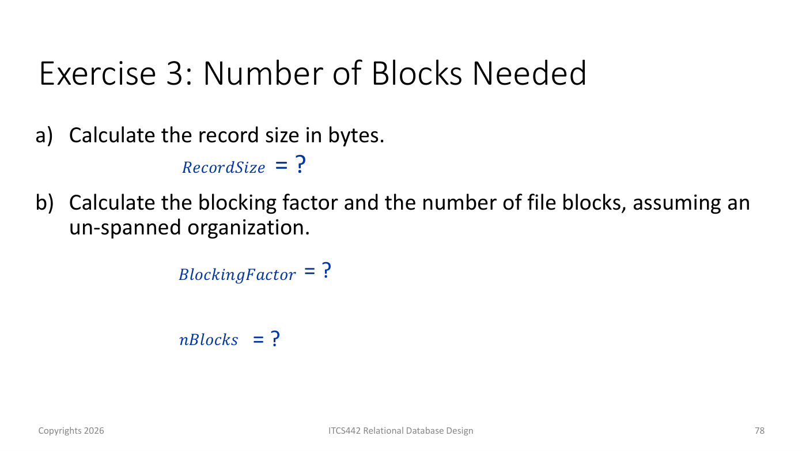
L09 slide p.60
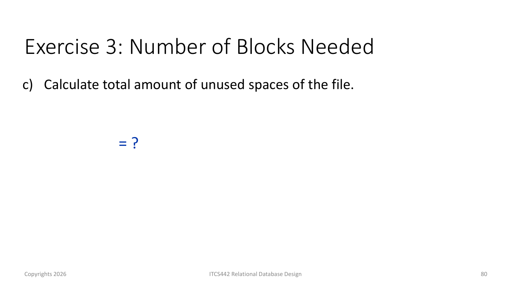
L09 slide p.61
L09
Exercise 4: Linear Search vs Binary Search
↑
โจทย์ย่อ: 20,000 STUDENT records. Fields total + 1 deletion marker. s=30 ms,
rd=12.5 ms, btt=1 ms, btr=409.6 B/ms, B=512.
a) Record size R
สูตร: R = all fields + deletion marker
R = 30+9+40+10+8+1+4+4+4+3+1
คำตอบ: 114 bytes
b) Blocking factor and file blocks
สูตร: bfr = floor(B/R); nBlocks = ceil(nRecords/bfr)
bfr = floor(512/114) = 4 records/block
nBlocks = ceil(20000/4)
คำตอบ: bfr = 4, nBlocks = 5,000 blocks
c-i) Average linear search, contiguous + double buffering
สูตร: avg blocks checked = nBlocks/2; time = s+rd+(avgBlocks×B/btr)
avg blocks = 5000/2 = 2500
transfer time = 2500×512/409.6 = 3125 ms
total = 30+12.5+3125
คำตอบ: 3,167.5 ms
c-ii) Average linear search, not contiguous
สูตร: time = avgBlocks × (s+rd+btt)
one random block = 30+12.5+1 = 43.5 ms
total = 2500×43.5
คำตอบ: 108,750 ms
d) Binary search on ordered SSN
สูตร: accesses = ceil(log2 nBlocks); time = accesses × (s+rd+btt)
accesses = ceil(log2 5000) = 13
time = 13×43.5
คำตอบ: 565.5 ms
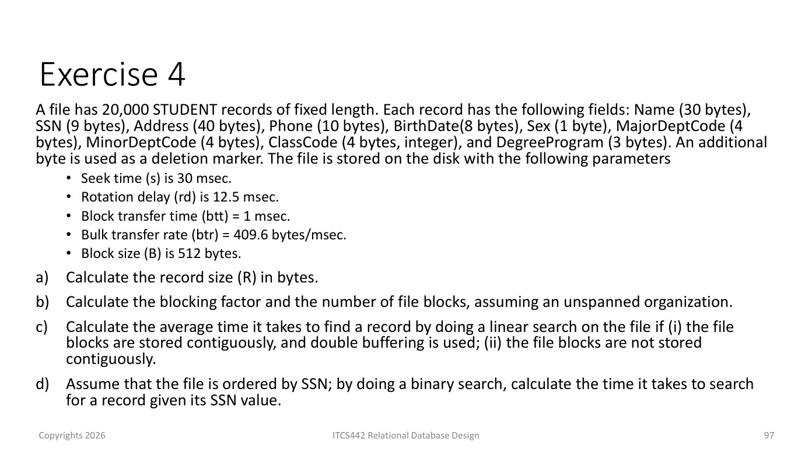
L09 slide p.77
L11
Hash Exercise: Load PARTS file and average block accesses
↑
โจทย์ย่อ: Part# values use h(K)=K mod 8. 8 buckets, each bucket holds 2 records.
Use overflow/chaining when a bucket is full.
a) Hash each Part#
สูตร: bucket = Part# mod 8
0: 3760, 9208
1: 2369
2: 1074
3: 5659, 7115
4: 4692, 1620, overflow: 2428
5: 1821, 4981
6: 4750
7: 4871, 3943, overflow: 6975
คำตอบ: Buckets 4 and 7 need one overflow block each
b) Average block accesses
สูตร: average = total accesses for all records ÷ number of records
Records in home bucket block need 1 access
Overflow records 2428 and 6975 need 2 accesses
Total accesses = 13×1 + 2×2 = 17
Number of records = 15
คำตอบ: 17/15 = 1.13 block accesses on average
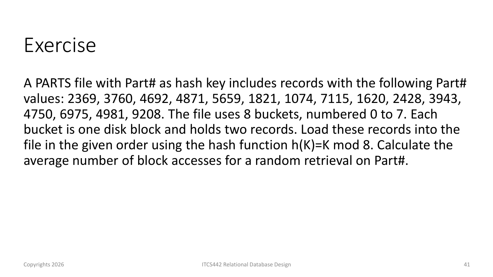
L11 slide p.36
L11
Exercise: Types of Index
↑
โจทย์ย่อ: Decide index type from data file organization and indexed field.
Rule 1) Primary index
สูตร: ordered file + ordering key field
Index has one entry per data block
Uses block pointer
Sparse index
คำตอบ: Primary index = sparse
Rule 2) Clustering index
สูตร: ordered file + ordering non-key field
One index entry per distinct value of clustering field
Points to first block of each group
คำตอบ: Clustering index = sparse-like by distinct values
Rule 3) Secondary index
สูตร: non-ordering field or extra index on any file
Usually dense
One entry per record or per distinct search-key value with pointer list
คำตอบ: Secondary index = dense
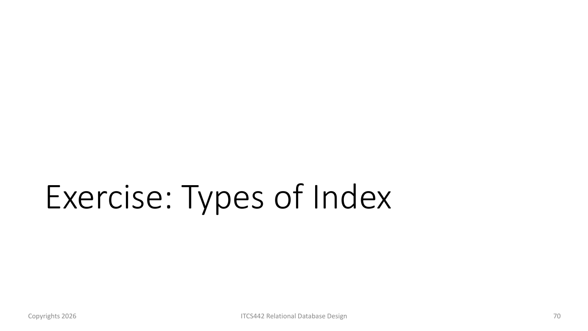
L11 slide p.61
L11
Example 1: Data file, dense primary index, sparse primary index
↑
โจทย์ย่อ: Ordered file: 30,000 records, block size 1024, record length 100,
key=9 bytes, block pointer=6, record pointer=7.
1) Data file blocks
สูตร: bfr = floor(block size / record size); blocks =
ceil(records/bfr)
bfr = floor(1024/100)=10
blocks = ceil(30000/10)
คำตอบ: 3,000 data blocks
2) Dense primary index blocks
สูตร: entry = key + record pointer; bfrIndex = floor(1024/entry);
blocks = ceil(entries/bfrIndex)
entry = 9+7=16 bytes
bfrIndex = floor(1024/16)=64
dense entries = number of records = 30,000
blocks = ceil(30000/64)
คำตอบ: 469 blocks
3) Sparse primary index blocks
สูตร: entry = key + block pointer; entries = number of data blocks
entry = 9+6=15 bytes
bfrIndex = floor(1024/15)=68
sparse entries = 3,000
blocks = ceil(3000/68)
คำตอบ: 45 blocks
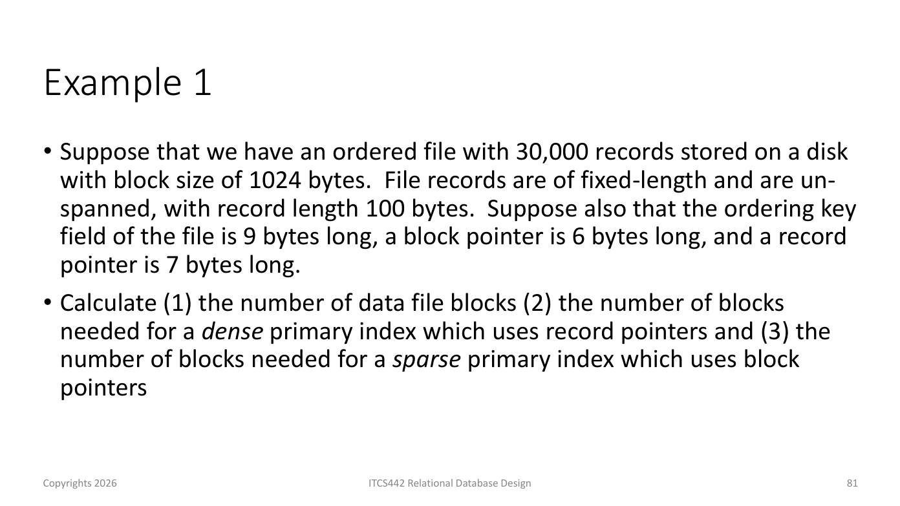
L11 slide p.72
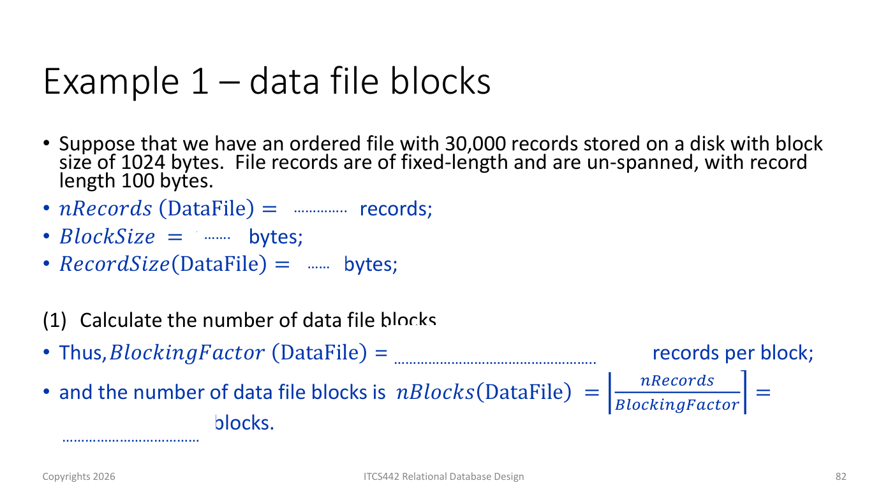
L11 slide p.73
L11 slide p.74
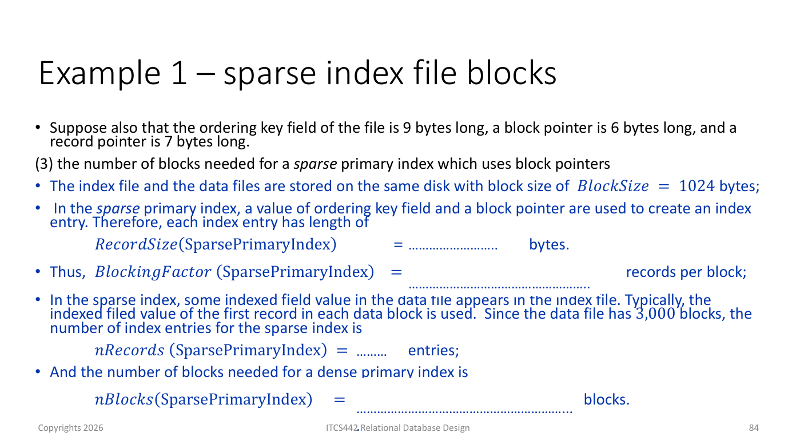
L11 slide p.75
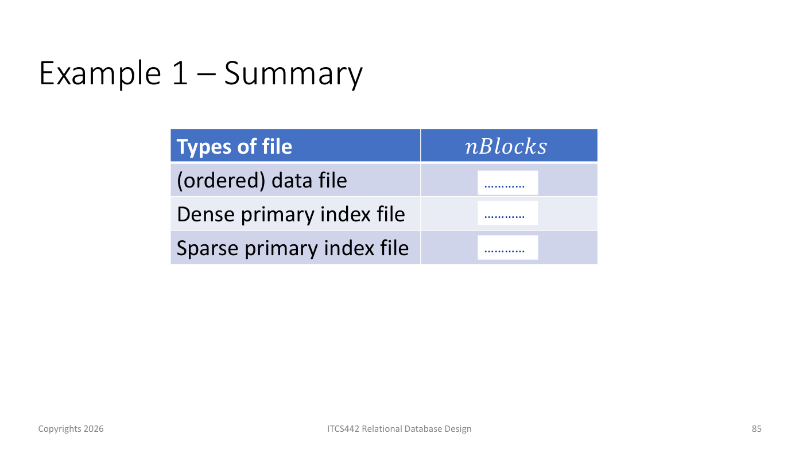
L11 slide p.76
L11
Example 2: Disk block accesses comparison
↑
โจทย์ย่อ: Using Example 1, compare direct binary search vs dense primary index
vs sparse primary index.
1) Directly search ordered data file
สูตร: accesses = ceil(log2 data blocks)
ceil(log2 3000) = 12
คำตอบ: 12 block accesses
2) Via dense primary index
สูตร: accesses = ceil(log2 dense index blocks) + 1 data block
ceil(log2 469)=9
9+1
คำตอบ: 10 block accesses
3) Via sparse primary index
สูตร: accesses = ceil(log2 sparse index blocks) + 1 data block
ceil(log2 45)=6
6+1
คำตอบ: 7 block accesses
Best choice
สูตร: choose smallest number of accesses
Direct = 12
Dense = 10
Sparse = 7
คำตอบ: Sparse primary index is best in this example
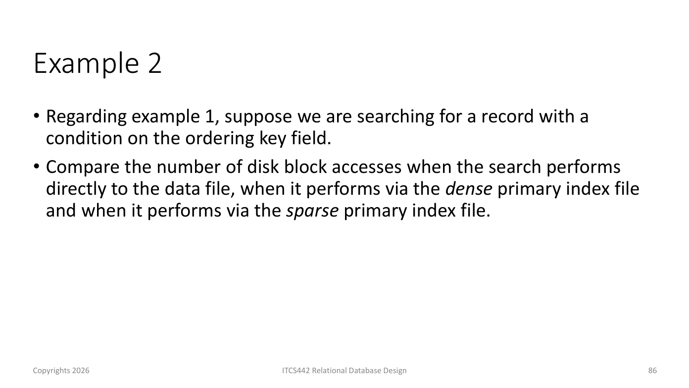
L11 slide p.77
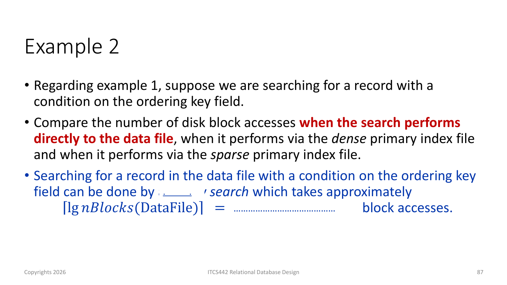
L11 slide p.78
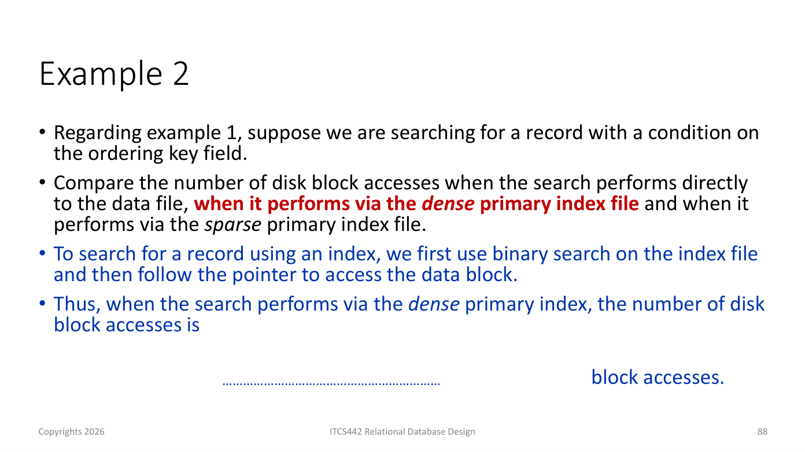
L11 slide p.79
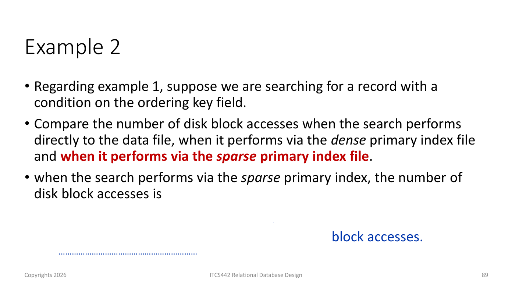
L11 slide p.80
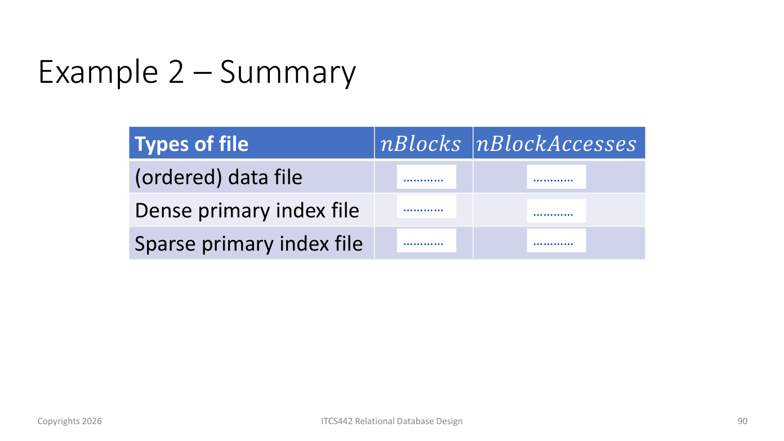
L11 slide p.81
L11
Example 3: Secondary index
↑
โจทย์ย่อ: Use Example 1 data file. Create secondary index on non-ordering key
field of 9 bytes. Block pointer = 6 bytes.
1) Blocks needed
สูตร: entry = field + block pointer; bfrIndex = floor(1024/entry);
blocks = ceil(records/bfrIndex)
entry = 9+6=15 bytes
bfrIndex = floor(1024/15)=68
secondary index is dense, entries=30,000
blocks = ceil(30000/68)
คำตอบ: 442 blocks
2) Search block accesses
สูตร: accesses = ceil(log2 index blocks)+1 data block
ceil(log2 442)=9
9+1
คำตอบ: 10 block accesses
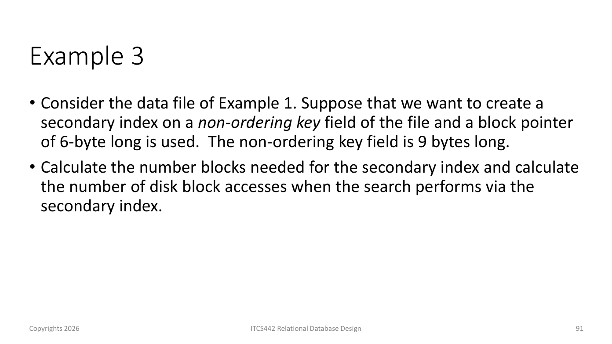
L11 slide p.82
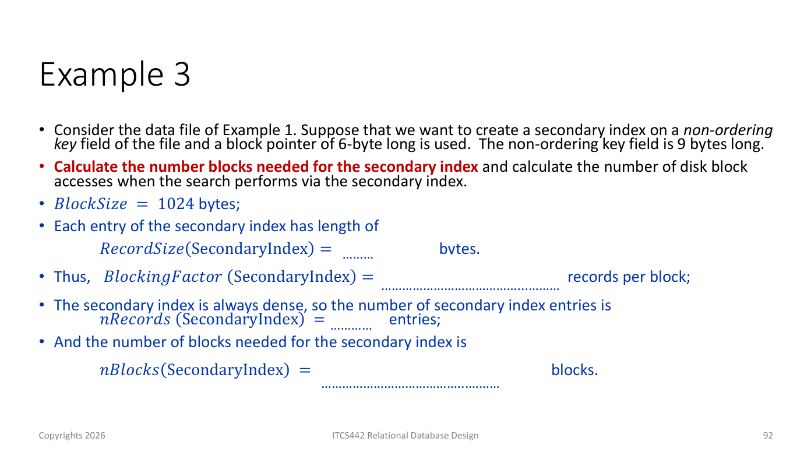
L11 slide p.83
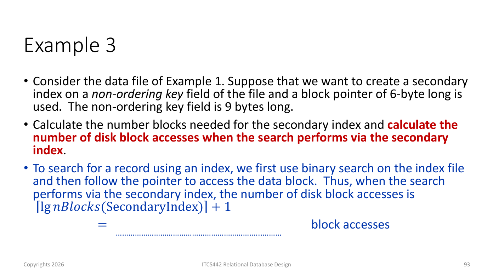
L11 slide p.84
L12
Example 3: Secondary index repeated for multilevel topic
↑
โจทย์ย่อ: Same numbers as L11 Example 3. Secondary index on non-ordering key
field.
1) Secondary index blocks
สูตร: entry=9+6; bfr=floor(1024/15); blocks=ceil(30000/68)
entry size = 15 bytes
bfr = 68
blocks = 442
คำตอบ: 442 blocks
2) Search accesses
สูตร: ceil(log2 442)+1
ceil(log2 442)=9
+1 for data block
คำตอบ: 10 block accesses
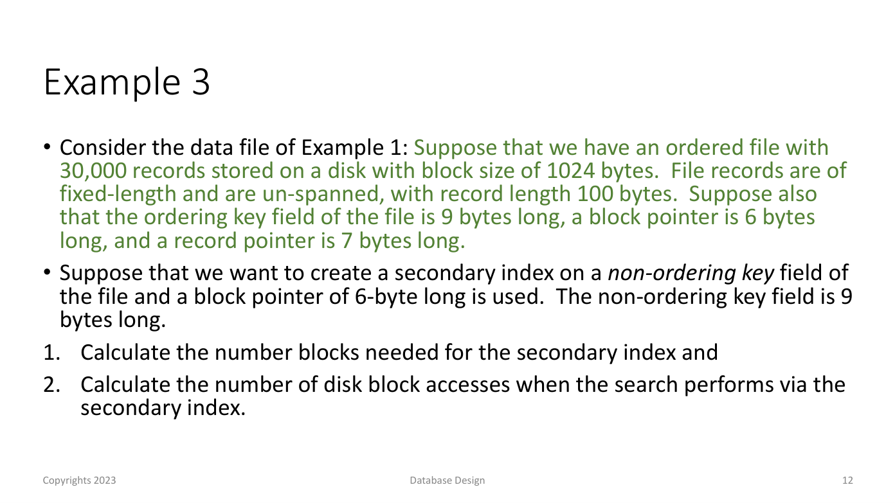
L12 slide p.10
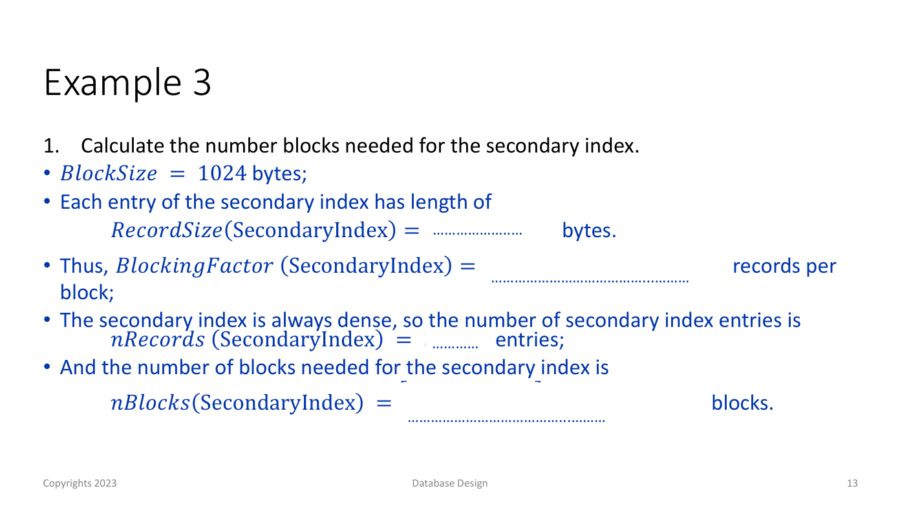
L12 slide p.11
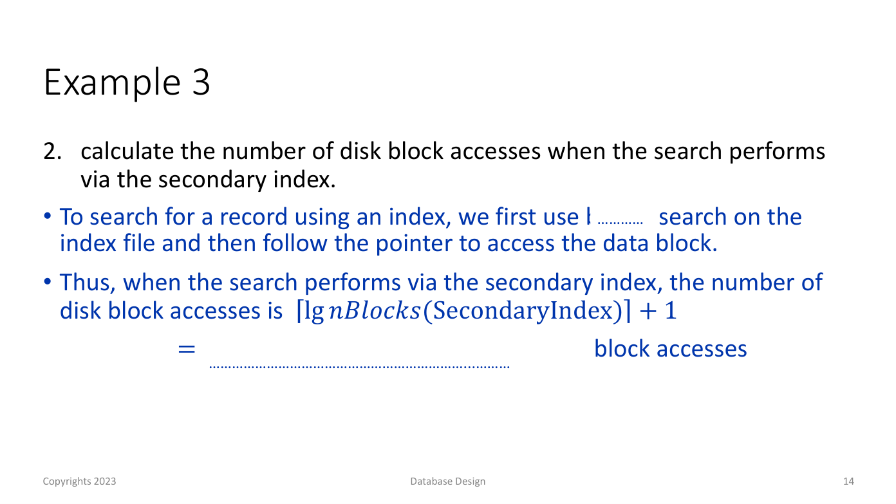
L12 slide p.12
L12
Example 4: Convert secondary index to multilevel index
↑
โจทย์ย่อ: First-level index has 442 blocks, fan-out = 68.
1) Number of blocks in multilevel index
สูตร: r2=ceil(r1/fo), r3=ceil(r2/fo), stop when level has 1 block
Level 1 = 442 blocks
Level 2 = ceil(442/68)=7 blocks
Level 3 = ceil(7/68)=1 block
Total = 442+7+1
คำตอบ: 450 index blocks
2) Search accesses
สูตร: one block per index level + one data block
3 index levels
+1 data block
คำตอบ: 4 block accesses
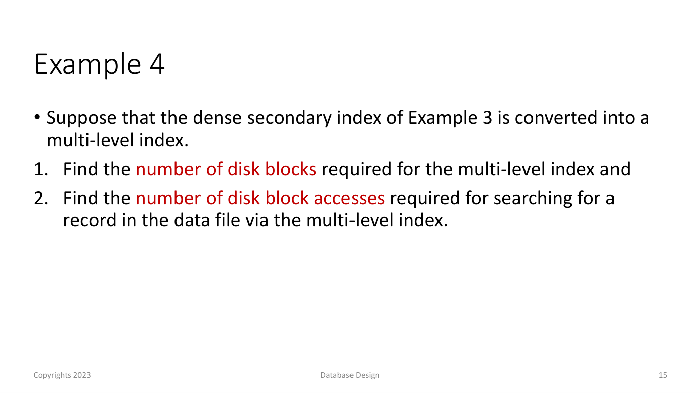
L12 slide p.13
L12 slide p.14
L12 slide p.15
L12
Search tree / B-tree concept questions
↑
โจทย์ย่อ: Slides ask whether trees satisfy search-tree/B-tree rules.
Search tree rule
สูตร: Keys inside node sorted and child subtrees must follow key
ranges
Left subtree values < first key
Middle subtree values between surrounding keys
Right subtree values > last key
คำตอบ: A valid search tree must satisfy all range rules
B-tree rule
สูตร: Order n: max n tree pointers, max n−1 keys, internal nodes at
least ceil(n/2) pointers, all leaves same level
For order 3, each node has at most 3 pointers and 2 keys
Non-root internal nodes need at least ceil(3/2)=2 pointers
Leaves must be at same level
คำตอบ: Use these rules to check diagrams
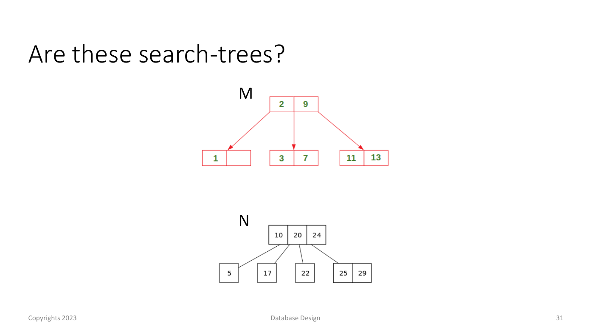
L12 slide p.29
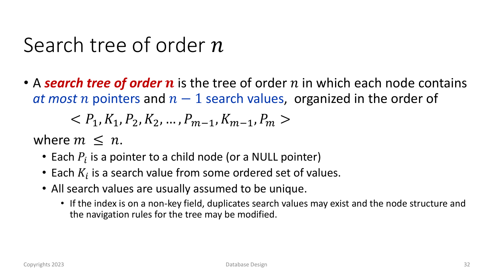
L12 slide p.30
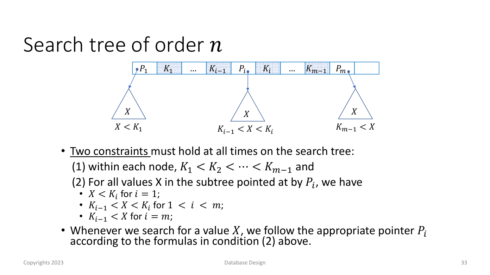
L12 slide p.31
L12 slide p.36
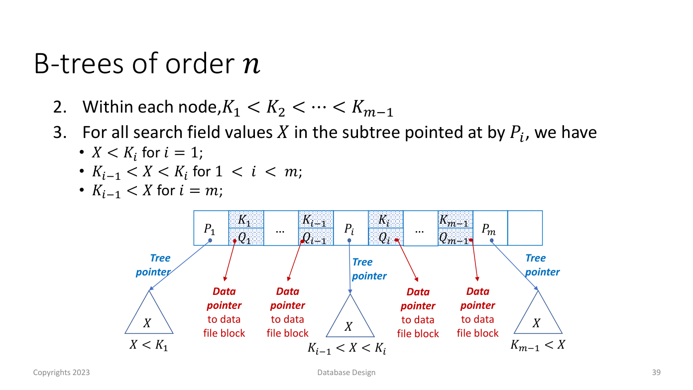
L12 slide p.37
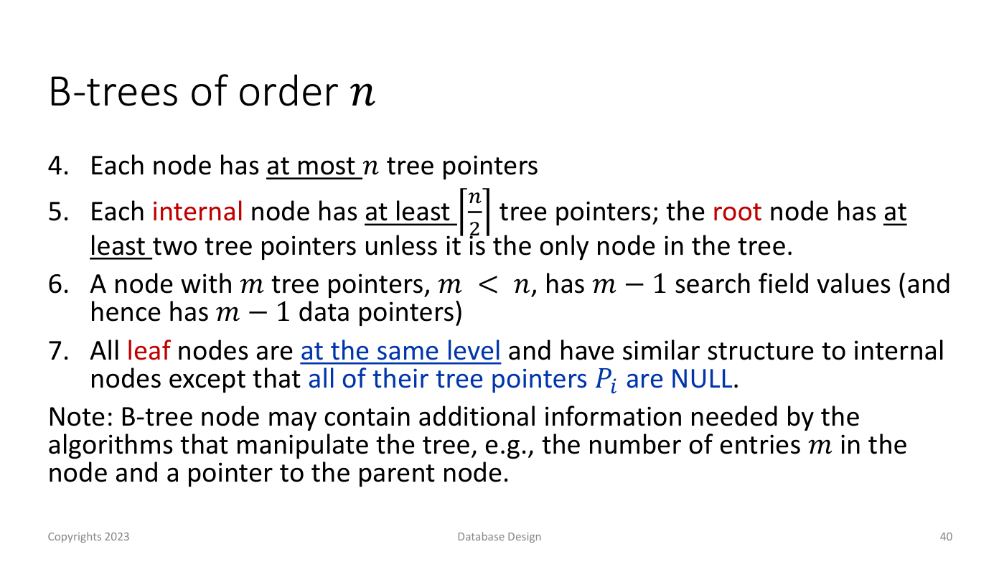
L12 slide p.38
L12 slide p.39
L12
Example 6: Order of B+-tree internal and leaf nodes
↑
โจทย์ย่อ: Block size=512, record pointer=7, block pointer=6, key=9. B+-tree node
= one disk block.
a) Internal node order n
สูตร: n×blockPointer + (n−1)×key ≤ block size
6n + 9(n−1) ≤ 512
15n − 9 ≤ 512
15n ≤ 521
n ≤ 34.73
คำตอบ: n = 34
b) Leaf node order nLeaf
สูตร: nLeaf×key + nLeaf×recordPointer + nextPointer ≤ block size
nLeaf×9 + nLeaf×7 + 6 ≤ 512
16nLeaf ≤ 506
nLeaf ≤ 31.625
คำตอบ: nLeaf = 31
L12 slide p.53
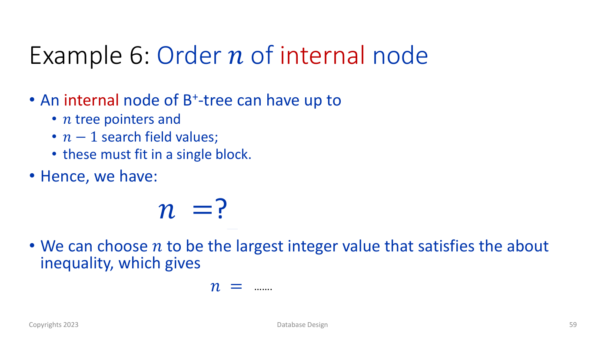
L12 slide p.54
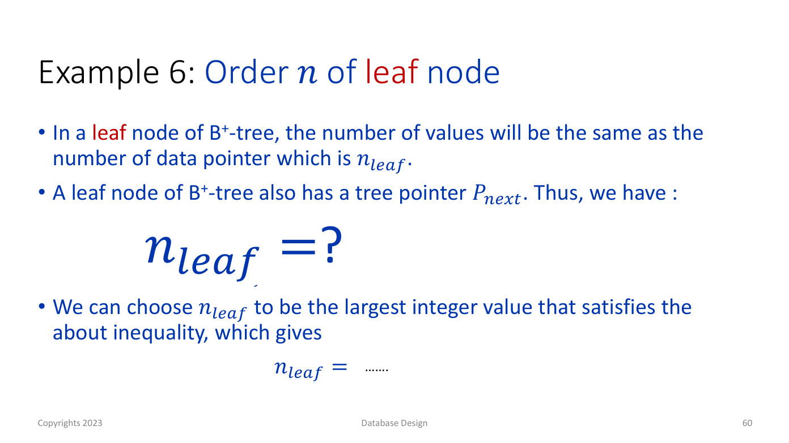
L12 slide p.55
L12
Example 7: Three-level B+-tree average blocks and entries
↑
โจทย์ย่อ: Use Example 6. Assume each node is 69% full.
a) Average internal capacity
สูตร: internal pointers = floor(n×0.69); keys = pointers−1
floor(34×0.69)=floor(23.46)=23 pointers
keys = 23−1=22
คำตอบ: 23 tree pointers and 22 keys per internal node
b) Average leaf capacity
สูตร: leaf entries = floor(nLeaf×0.69)
floor(31×0.69)=floor(21.39)=21
คำตอบ: 21 key entries/data pointers per leaf
c) Number of blocks
สูตร: root + level1 + level2 + leaf level
Root = 1
Level 1 = 23
Level 2 = 23×23 = 529
Leaf = 529×23 = 12,167
Total = 1+23+529+12167
คำตอบ: 12,720 blocks
d) Number of supported entries
สูตร: leaf blocks × entries per leaf
12,167 × 21
คำตอบ: 255,507 entries
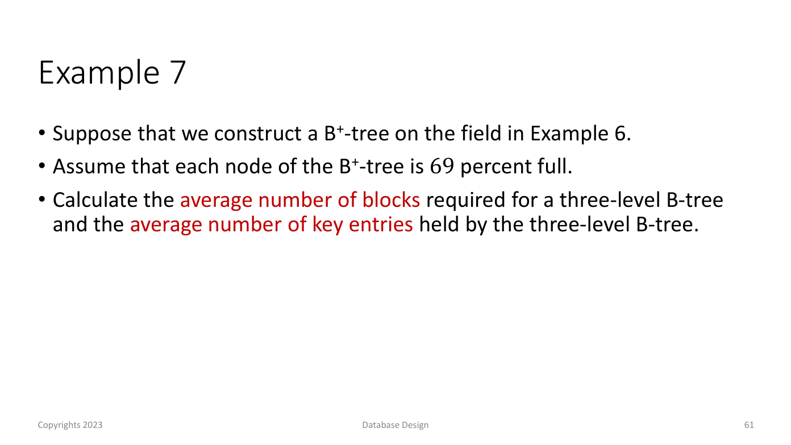
L12 slide p.56
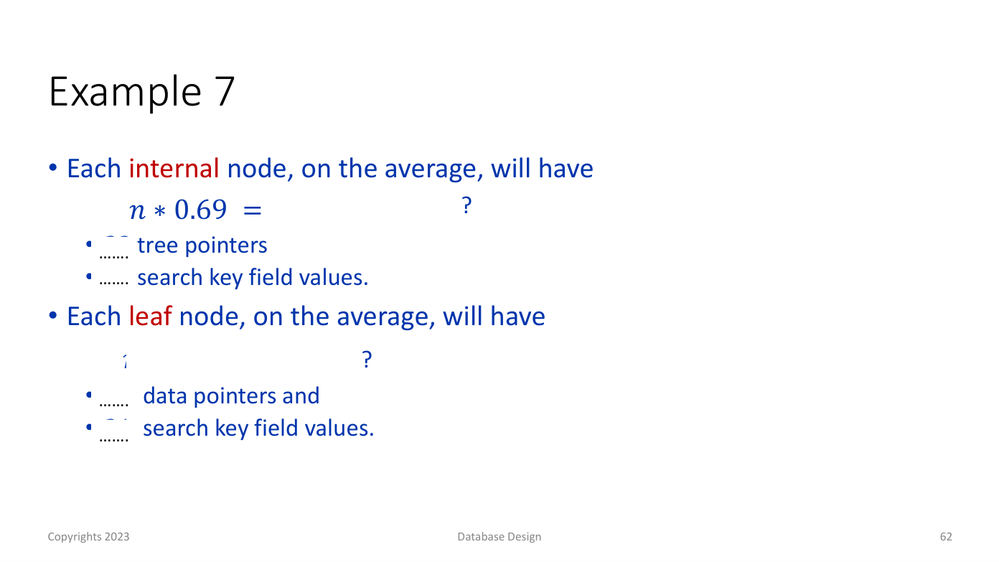
L12 slide p.57
L12 slide p.58
L12 slide p.59
L13
SQL ↔ Relational Algebra quick answers
↑
โจทย์ย่อ: These slides ask “Equivalent Relational Algebra?” or “Equivalent
SQL?”.
1) SELECT * FROM Staff WHERE salary > 1000
สูตร: selection σ
Use σ_salary>1000(Staff)
คำตอบ: σ salary>1000 (Staff)
2) SELECT * FROM Staff WHERE salary>10000 AND NOT(position=Manager)
สูตร: selection with AND and NOT
Combine predicates inside σ
คำตอบ: σ (salary>10000) ∧ ¬(position=Manager) (Staff)
3) SELECT staffNo,fName,lName,salary FROM Staff
สูตร: projection π
Keep only selected columns
คำตอบ: π staffNo,fName,lName,salary (Staff)
4) SELECT columns FROM Staff WHERE salary>10000
สูตร: selection first, then projection
Filter rows first
Then keep required columns
คำตอบ: π staffNo,fName,lName,salary (σ salary>10000 (Staff))
5) WHERE position=Manager then project columns
สูตร: cannot project away position before selection
If π removes position first, σ cannot check position
คำตอบ: π staffNo,fName,lName,salary (σ position=Manager (Staff))
6) UNION / INTERSECT / EXCEPT
สูตร: π city(Branch) set operator π city(PropertyForRent)
UNION = ∪
INTERSECT = ∩
EXCEPT = −
คำตอบ: Use SELECT city FROM Branch UNION/INTERSECT/EXCEPT SELECT city
FROM PropertyForRent
7) Client × Viewing
สูตร: cartesian product
SQL: SELECT * FROM Client, Viewing
คำตอบ: Client × Viewing
8) Client join Viewing on clientNo
สูตร: theta/equi join
Join condition Client.clientNo=Viewing.clientNo
คำตอบ: Client ⋈ Client.clientNo=Viewing.clientNo Viewing
9) LEFT JOIN PropertyForRent and Viewing
สูตร: left outer join
Keep all PropertyForRent rows
คำตอบ: PropertyForRent ⟕ propertyNo Viewing
10) GROUP BY / HAVING
สูตร: aggregation γ then selection for HAVING
COUNT propertyNo where rent>350
branchNo group COUNT(staffNo), SUM(salary)
HAVING SUM(salary)>15000 is after grouping
คำตอบ: σ SUM(salary)>15000 ( γ branchNo;
COUNT(staffNo),SUM(salary)(Staff) )
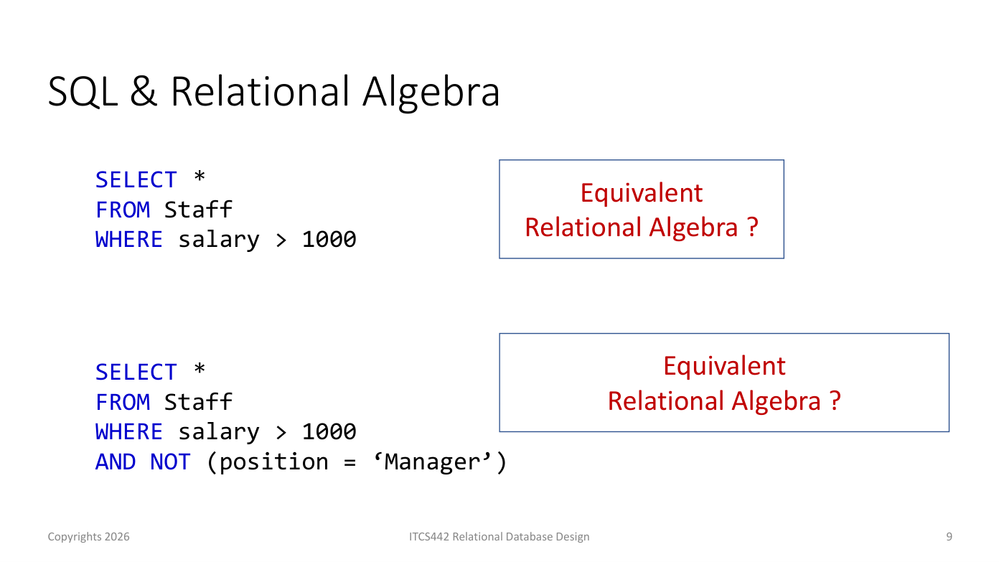
L13 slide p.7
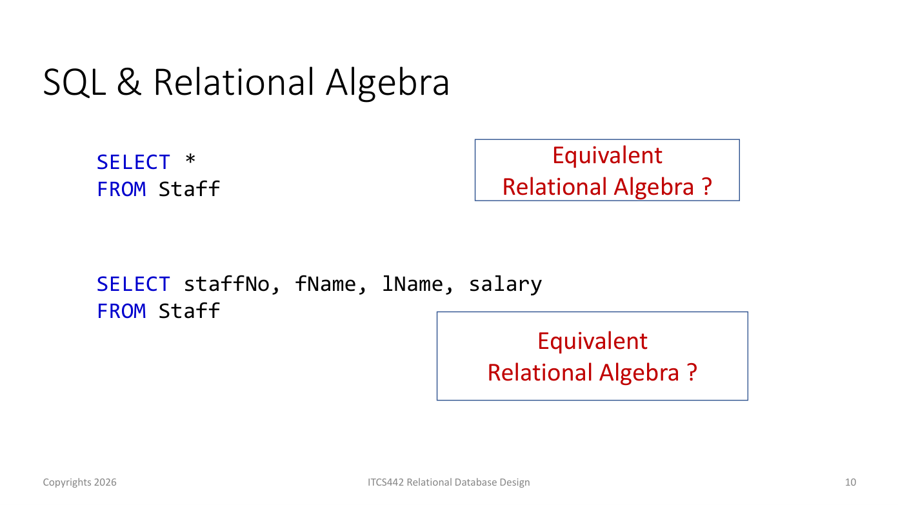
L13 slide p.8
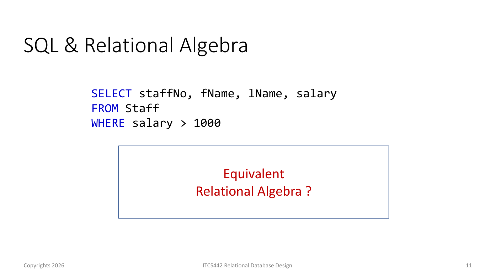
L13 slide p.9
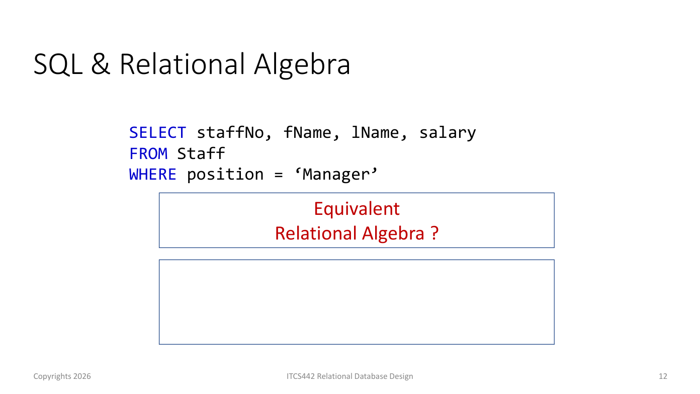
L13 slide p.10
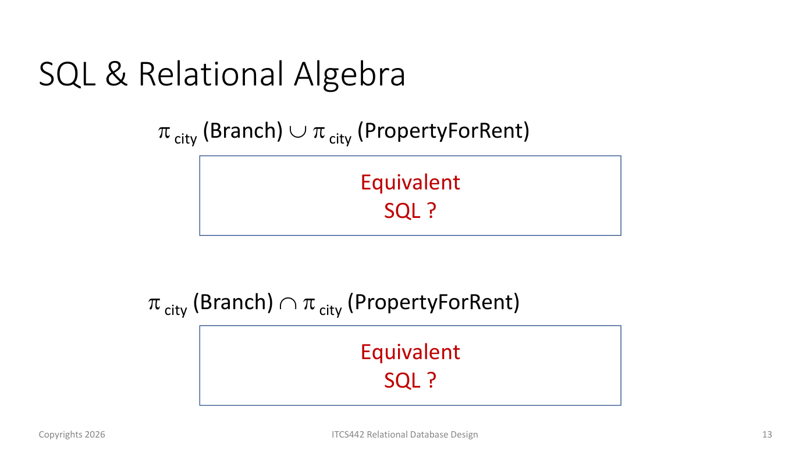
L13 slide p.11
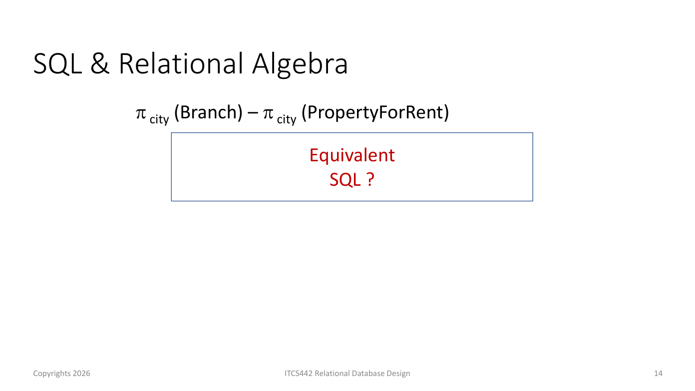
L13 slide p.12
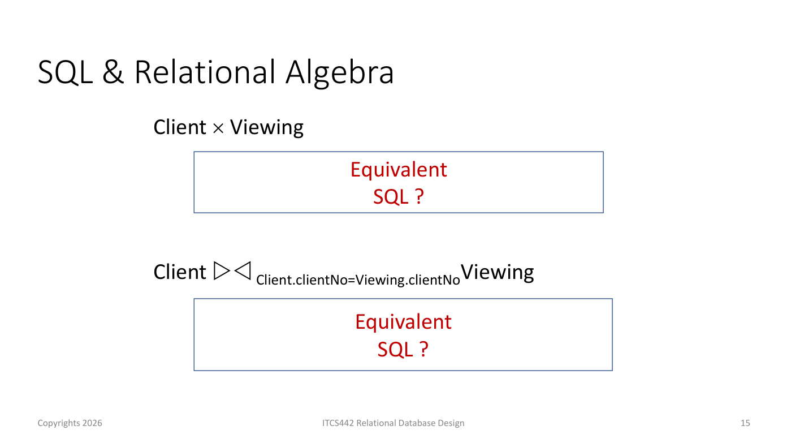
L13 slide p.13
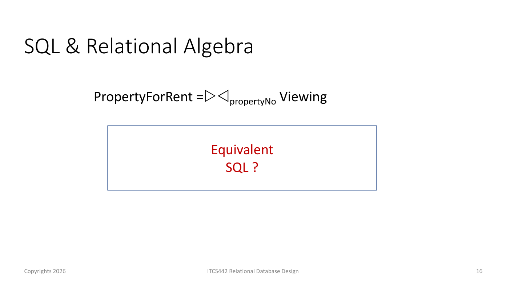
L13 slide p.14
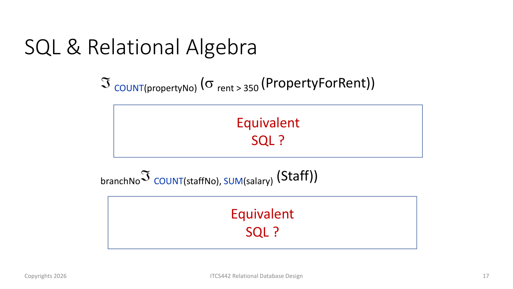
L13 slide p.15
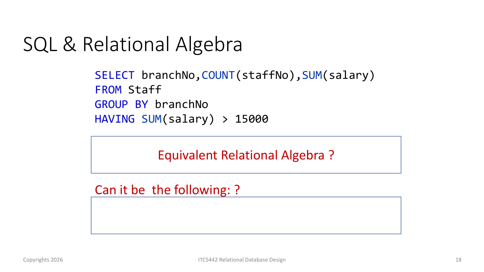
L13 slide p.16
L13
Query Optimization Strategy Cost
↑
โจทย์ย่อ: Query: Staff join Branch where Staff.branchNo=Branch.branchNo AND
position=Manager AND city=London. Stats: 1000 Staff, 50 Managers, 50 Branches, 5 London.
Strategy I: Cross product then selection
สูตร: read Staff + read Branch + write cross product + read cross
product
= 1000 + 50 + (1000×50) + (1000×50)
คำตอบ: 101,050 disk accesses
Strategy II: Join then selection
สูตร: read Staff + read Branch + write join + read join
= 1000 + 50 + 1000 + 1000
คำตอบ: 3,050 disk accesses
Strategy III: Select first, then join
สูตร: reduce each relation before join
Read Staff and select Managers = 1000
Write Managers = 50
Read Branch and select London = 50
Write London = 5
Read reduced relations and join = 50
Small final intermediate ≈ 5
Total = 1000+50+50+5+50+5
คำตอบ: 1,160 disk accesses
Best strategy
สูตร: choose minimum cost
I = 101,050
II = 3,050
III = 1,160
คำตอบ: Strategy III is best because selections are done early
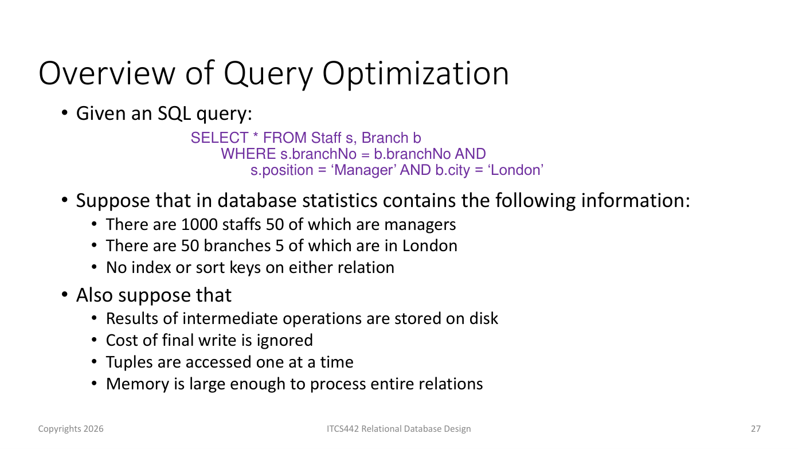
L13 slide p.25
L13 slide p.26
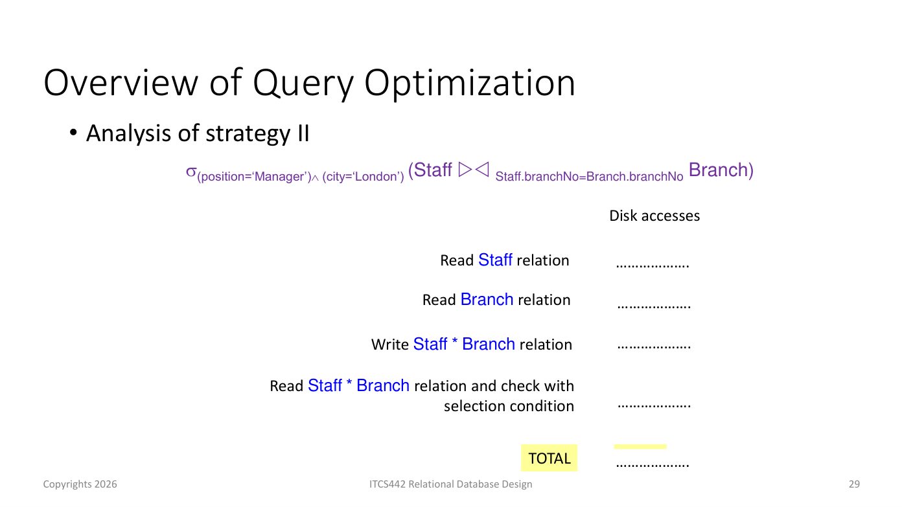
L13 slide p.27
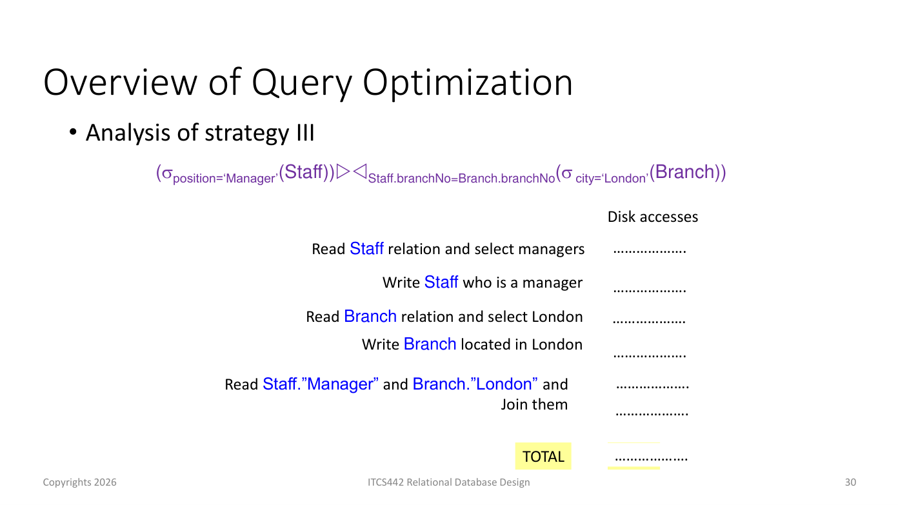
L13 slide p.28
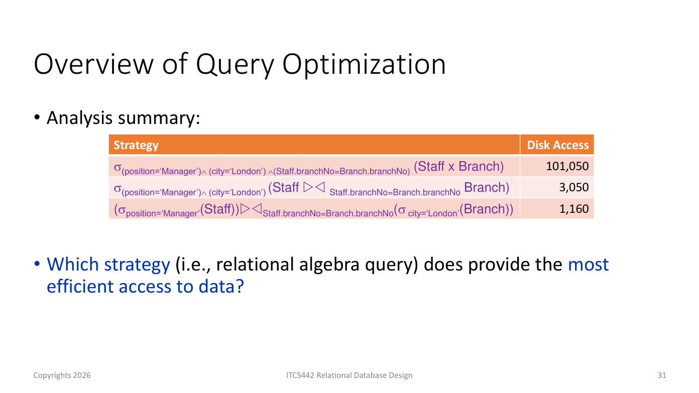
L13 slide p.29
L13
Exercise: Draw query trees
↑
โจทย์ย่อ: Draw query trees for three relational algebra expressions.
A) σ over Staff × Branch
สูตร: tree root = σ, child = ×, leaves = Staff and Branch
Root: σ position=Manager ∧ city=London ∧ Staff.branchNo=Branch.branchNo
Child: ×
Leaves: Staff, Branch
คำตอบ: Least efficient tree because cross product is large
B) σ over Staff ⋈ Branch
สูตร: tree root = σ, child = join
Root: σ position=Manager ∧ city=London
Child: ⋈ Staff.branchNo=Branch.branchNo
Leaves: Staff, Branch
คำตอบ: Better than A because join replaces cross product
C) Join of two selections
สูตร: tree root = join, children = σ Staff and σ Branch
Root: ⋈ Staff.branchNo=Branch.branchNo
Left child: σ position=Manager(Staff)
Right child: σ city=London(Branch)
คำตอบ: Best heuristic tree because selection is pushed down early
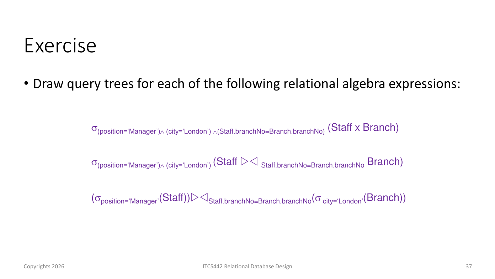
L13 slide p.35
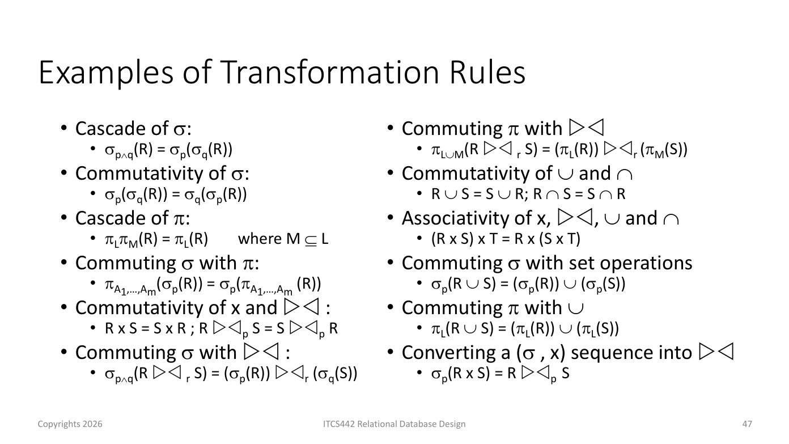
L13 slide p.45
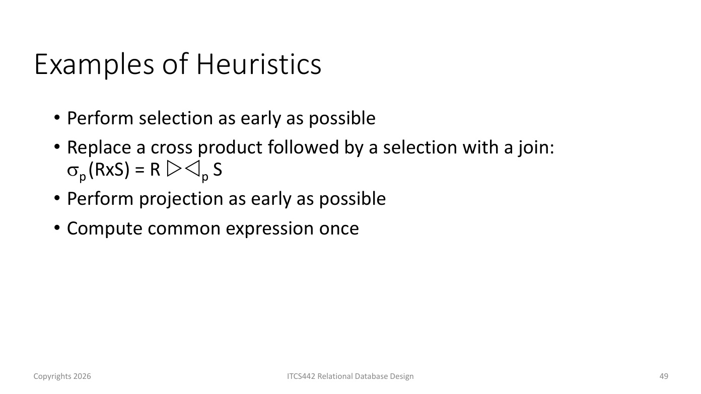
L13 slide p.47
L13
Example: Estimating SELECTION Cost
↑
โจทย์ย่อ: Given indexes and statistics: hash Staff.staffNo, clustering
Staff.branchNo, B+-tree Staff.salary, n=3000, f=30, branch DV=500, position DV=10, salary range
10000–50000.
1) σ staffNo = SG5
สูตร: hash index equality on primary key
Hash index without overflow gives 1 block access
Primary key means cardinality 1
คำตอบ: Cost C=1 block, SC=1
2) σ position = Manager
สูตร: no index ⇒ linear search; SC = n/DV
bStaff = n/f = 3000/30 = 100 blocks
SC = 3000/10 = 300
คำตอบ: Cost C=100 blocks, SC=300
3) σ branchNo = B003
สูตร: clustering index cost = HTI + ceil(SC/f)
SC = 3000/500 = 6
C = 2 + ceil(6/30) = 3
คำตอบ: Cost C=3 blocks, SC=6
4) σ salary > 20000
สูตร: B+-tree range cost = HTI + bLI/2 + n/2; SC from range fraction
C = 2 + 50/2 + 3000/2 = 1527
SC = 3000×(50000−20000)/(50000−10000)
= 2250
คำตอบ: Cost C=1527 blocks, SC=2250
5) σ position=Manager AND branchNo=B003
สูตร: use the more useful index first, then check remaining
predicate
Use clustering index on branchNo
Cost = 3
Intermediate nT = SC branchNo = 6
DVT.position=(nT+DVposition)/3=(6+10)/3≈6
SC = 6/6 = 1
คำตอบ: Cost C=3 blocks, SC≈1
L13 slide p.86
L13 slide p.87
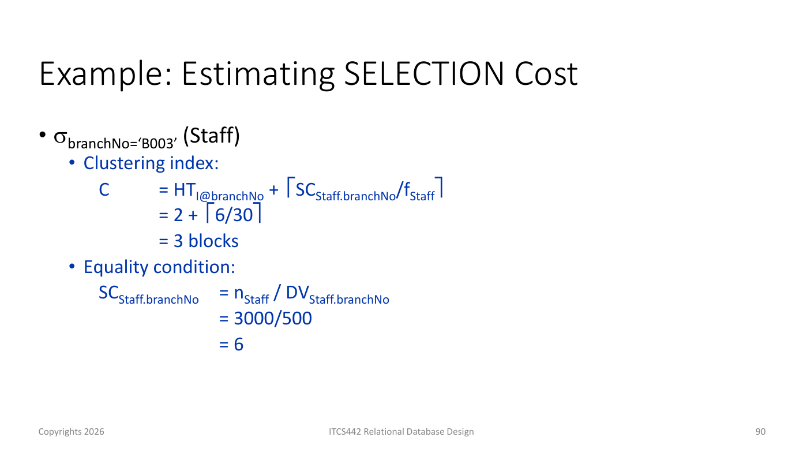
L13 slide p.88
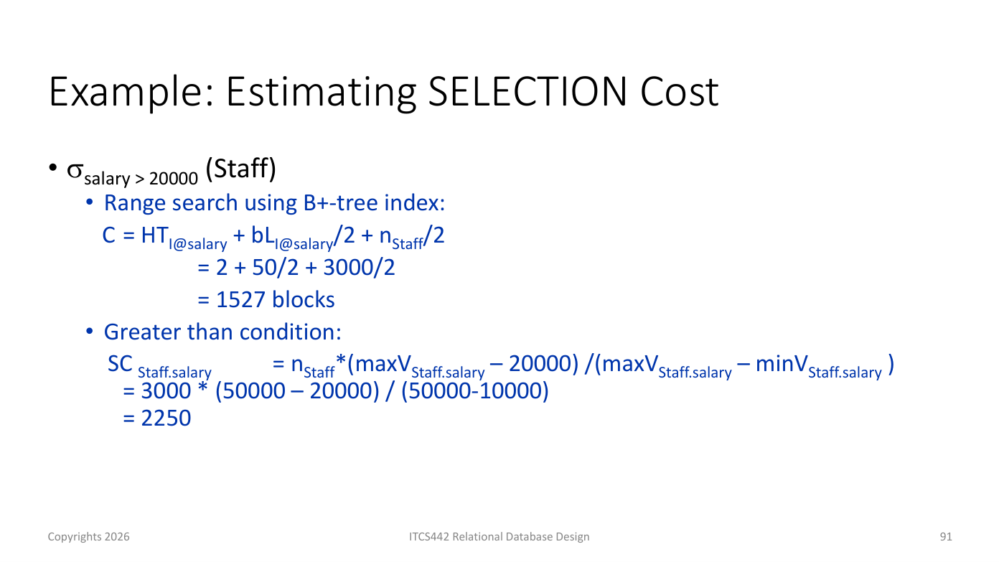
L13 slide p.89
L13 slide p.90
L13
Example: Estimating JOIN Cost
↑
โจทย์ย่อ: Given: buffer=100 blocks, Staff b=200 n=6000, Branch b=10 n=500,
PropertyForRent b=2000 n=100000. Hash indexes on Staff.staffNo and Branch.branchNo.
JQ1) Staff ⋈ staffNo PropertyForRent
สูตร: compare join algorithms
Block nested loop: C = bS + (bS×bP/(buffer−2)) = 200 + 200×2000/98 ≈ 4282
Indexed nested loop: C = bS + nS×z = 200 + 6000×1 = 6200
Sort-merge: sorting 23600 + merging 2200 = 25800
Hash join: 3×(200+2000)=6600
คำตอบ: Best = Block nested loop, about 4,282
JQ2) Branch ⋈ branchNo PropertyForRent
สูตร: Branch fits in memory
Block nested loop: C = bB+bP = 10+2000=2010
Indexed nested loop: C = bB+nB×z = 10+500×1 = 510
Sort-merge: sorting 22230 + merging 2010 = 24240
Hash join: 3×(10+2000)=6030
คำตอบ: Best = Indexed nested loop, 510
L13 slide p.96
L13 slide p.97
L13 slide p.98
L13
Projection and Set Operation Cost
↑
โจทย์ย่อ: Formulas from slides for projection and set operations.
Projection cost
สูตร: remove non-required attributes + remove duplicates
If sorting: C = bR + bR×log2(bR)
If hashing: C = bR + nb
คำตอบ: Use sorting/hashing formula depending on algorithm
Projection cardinality
สูตร: S = πA(R)
If A is key: nS=nR
Otherwise: nS=SC_R.A
คำตอบ: Key keeps all tuples unique; non-key collapses duplicates
Set operation cost
สูตร: sort-merge UNION / INTERSECTION / DIFFERENCE
C = bR+bS+bR×log2(bR)+bS×log2(bS)
คำตอบ: Use this for set operations when sort-merge is used
Set operation cardinality bounds
สูตร: use min/max bounds
UNION: max(nR,nS) < nT < nR+nS
INTERSECTION: 0 < nT < min(nR,nS)
DIFFERENCE: 0 < nT < nR
คำตอบ: These are estimates/bounds, not exact unless data distribution is
known
L13 slide p.99
L13 slide p.100
L13 slide p.101
L13 slide p.102
L14
Physical Design and Tuning: “งานที่ต้องคิด” checklist
↑
โจทย์ย่อ: This lecture is mostly decision-making, not numeric calculation. Use
these rules to answer index/tuning questions.
1) Choose attributes to index
สูตร: index candidates = attributes in selection/join conditions,
keys, uniqueness constraints
High-frequency queries matter most (80–20 rule)
Strict time constraints make an attribute higher priority
Candidate keys should have access paths
คำตอบ: Index WHERE/JOIN/key attributes first
2) Avoid too many indexes on frequently updated files
สูตร: update overhead increases with number of indexes
INSERT/DELETE/UPDATE must maintain every index
A table with 10 indexes has more update overhead than a table with 1–2 indexes
คำตอบ: For update-heavy tables, keep indexes minimal
3) Tree index vs hash index
สูตร: tree for equality + range; hash for equality only
B+-tree supports =, >, <, BETWEEN, ORDER BY
Hash is faster for exact equality but not range
คำตอบ: Use B+-tree for range, hash for equality
4) SQL index syntax
สูตร: CREATE [UNIQUE] INDEX name ON table(column [ASC/DESC], ...)
[CLUSTER]
UNIQUE when duplicate values are not allowed
CLUSTER/clustered index sorts data records on that index attribute
คำตอบ: Example: CREATE INDEX idx_staff_branch ON Staff(branchNo);
5) Query tuning rules
สูตร: reduce data early and avoid expensive operations when possible
Use SELECT columns instead of SELECT *
Push selection before join
Use indexed join attributes
Avoid string comparison when another key works
Avoid unnecessary DISTINCT, ORDER BY, and nested queries
คำตอบ: Goal = lower I/O cost and response time
L14 slide p.7
L14 slide p.8
L14 slide p.9
L14 slide p.10
L14 slide p.11
L14 slide p.12
L14 slide p.13
L14 slide p.14
L14 slide p.15
L14 slide p.16
L14 slide p.17
L14 slide p.18
L14 slide p.21
L14 slide p.25
L14 slide p.26
L14 slide p.27
L14 slide p.28
L14 slide p.29
L14 slide p.30
L14 slide p.31
L14 slide p.32
L15
Read-set / Write-set and ACID
↑
โจทย์ย่อ: Slides ask transaction concepts and how DBMS sees read/write
operations.
Read-set / Write-set
สูตร: Read-set = all items read; Write-set = all items written
Read-only transaction: write-set is empty
Read-write transaction: at least one write operation
คำตอบ: Use sets like Read-set={X,Y}, Write-set={X}
ACID properties
สูตร: Atomicity, Consistency, Isolation, Durability
Atomicity: all or nothing
Consistency/serializability: correct database state
Isolation: one transaction should not interfere with another
Durability: committed data survives failure
คำตอบ: Remember A-C-I-D
Commit vs Rollback
สูตร: commit = successful end; rollback/abort = undo unsuccessful
transaction
If transaction completes, changes are committed
If transaction fails, effects must be undone
คำตอบ: COMMIT keeps changes; ROLLBACK undoes changes
L15 slide p.13
L15 slide p.14
L15 slide p.15
L15 slide p.16
L15
Concurrent Transaction Problems
↑
โจทย์ย่อ: Airline reservation example: T1 transfers N seats from X to Y, T2
reserves M seats for X, T3 sums all reserved seats.
Lost update problem
สูตร: two transactions write same item; one update overwrites the
other
T1 reads X and computes X−N
T2 reads X and computes X+M
Whichever writes last overwrites the first result
คำตอบ: Final X may miss either −N or +M
Temporary update / dirty read
สูตร: a transaction reads a value written by another uncommitted
transaction
T1 writes X
T2 reads that X before T1 commits
If T1 aborts, T2 used invalid data
คำตอบ: Dirty read causes incorrect result and rollback issues
Incorrect summary problem
สูตร: summary transaction reads mixed old/new values
T3 sums X before transfer and Y after transfer, or vice versa
The total becomes inconsistent although each read is individually valid
คำตอบ: Aggregation sees inconsistent snapshot
L15 slide p.23
L15 slide p.24
L15 slide p.25
L15 slide p.26
L15 slide p.27
L15 slide p.28
L15 slide p.29
L15 slide p.30
L15 slide p.31
L15
Recoverable, Cascadeless, Strict Schedules
↑
โจทย์ย่อ: Classify schedules by when transactions read/write/commit/abort.
Recoverable schedule
สูตร: If Tj reads data written by Ti, then Tj commits after Ti
commits
Commit order must respect read-from dependency
If reader commits before writer, schedule is non-recoverable
คำตอบ: Recoverable prevents committed transaction from depending on
aborted data
Cascading rollback
สูตร: reader reads uncommitted data and writer aborts
T2 reads X from T1
T1 aborts
T2 must also abort
คำตอบ: This can force many transactions to rollback
Cascadeless schedule
สูตร: transactions read only committed data
Delay read until writer commits
Avoids cascading rollback
คำตอบ: Every read is from a committed transaction
Strict schedule
สูตร: no transaction may read or write X until the last writer of X
commits/aborts
Stronger than cascadeless
Prevents dirty reads and dirty writes
คำตอบ: Strict schedule is safest for recovery
L15 slide p.33
L15 slide p.34
L15 slide p.35
L15 slide p.36
L15 slide p.37
L15 slide p.38
L15 slide p.39
L15 slide p.40
L15
Serializability and Conflict Serializable Examples
↑
โจทย์ย่อ: Decide whether non-serial schedules are equivalent to a serial
schedule.
Serial vs non-serial
สูตร: serial = all operations of each transaction run consecutively;
non-serial = interleaved
Serial is always correct but slower
Non-serial can be faster but must be checked
คำตอบ: Need serializability to know if non-serial is correct
Conflict rule
สูตร: operations conflict if different transactions + same item + at
least one write
r1(X) and r2(X) do not conflict
r1(X) and w2(X) conflict
w1(X) and w2(X) conflict
คำตอบ: Use conflicts to build precedence graph
Testing serializability
สูตร: build graph: Ti → Tj if an operation of Ti conflicts before
operation of Tj
If graph has a cycle: not conflict serializable
If no cycle: conflict serializable
Topological order gives equivalent serial order
คำตอบ: No cycle = serializable
Schedule C / D idea
สูตร: check conflicts on X between T1 and T2
If graph has edges both ways, cycle occurs
If graph has one direction only, equivalent to one serial order
คำตอบ: Slide result: D is serializable and equivalent to A
Schedule E example
สูตร: precedence graph has T3 → T1 → T2 pattern
Slide graph has no cycle
Topological order is T3 then T1 then T2
คำตอบ: Schedule E is serializable; equivalent serial order = T3 → T1 →
T2
L15 slide p.41
L15 slide p.42
L15 slide p.43
L15 slide p.44
L15 slide p.45
L15 slide p.46
L15 slide p.49
L15 slide p.50
L15 slide p.51
L15 slide p.52
L15 slide p.53
L15 slide p.54
×